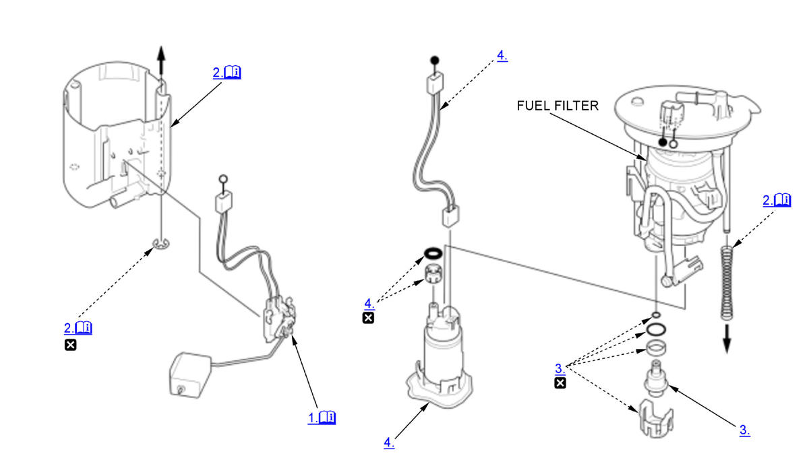

Disassembly and Reassembly: Procedure
NOTE:
Numbered call-outs in figure pertain to list numbers in following procedure.

Courtesy of HONDA, U.S.A., INC. |
Detailed information, notes and precautions |
 |
Replace |
- Fuel Level Sensor (Fuel Gauge Sending Unit) - Remove
NOTE: Be careful not to bend or twist the fuel level sensor arm excessively.
Note for installation
Make sure the connection is secure and the connector is firmly locked into place. Be careful not to bend or twist it excessively.
- Reservoir - Remove
1. Separate the fuel filter by disconnecting the hose. - Fuel Pressure Regulator - Remove
- Fuel Pump - Remove
- All Removed Parts - Install
1. Install the parts in the reverse order of removal.